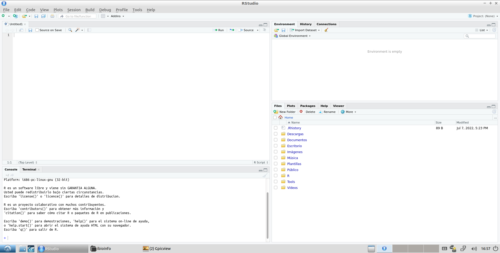
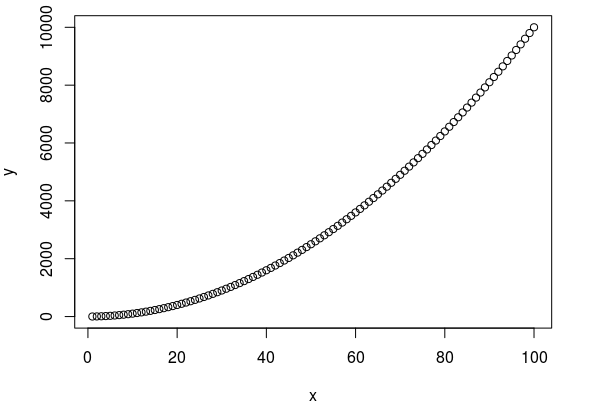

TP 8a. R - Programando en biología - Parte 1
TO DO
ver titulo, arreglar banner, agregar materiales, arreglar primeros y ultimos items
Software a usar
- R (ya instalado en la VM).
- RStudio (ya instalado en la VM)
Recursos Online
Objetivos
- Familiarizarse en el lenguaje de programación R.
- Ver como los mismos conceptos de programación se transladan de un lenguaje a otro.
- Utilizar herramientas de programación para resolver problemas biológicos.
Introducción al Tema
En los últimos años se produjo un crecimiento exponencial tanto en nuestra capacidad de producir información biológica como en nuestra capacidad de analizarla. Ensayos de alto rendimiento, o high-throughput, nos permiten analizar miles a millones de interacciones biológicas a la vez, mientras que computadoras de nueva generación o clusters de ellas nos permiten procesar en días u horas lo que en otra época hubiera tomado años.
Al momento de analizar datos a esta escala muchos programas conocidos se quedan atrás. Si bien Excell o Google Sheets van a poder abrir y procesar una tabla con unos pocos miles de filas, probablemente se cuelguen de tratar de hacer lo mismo para una tabla que contenga millones de ellas. No solo eso, sino que hojas de cálculo de ese estilo son bastante limitadas en lo que permiten hacer, donde es muy dificil realizar un análisis o plot que no esté entre los predeterminados por ellos.
En este trabajo práctico vamos a aprender a usar el lenguaje de programación R, el cual es uno de los lenguajes más utilizados hoy en día al momento de analizar datos biológicos (junto a Python) debido a su practicidad al momento de leer, modificar o hacer estadística con tablas de gran tamaño, asi como la gran variedad de figuras (o plots) que permite crear.
Historia de R
-
En 1976 se crea S, un lenguaje de programación diseñado para análisis estadísticos. S fue creado en Bell Labs, que es el mismo lugar mismo lugar donde se creo Unix (pero por otras personas)
-
En 1991, Ross Ihaka (estadístico) y Robert Gentleman (estadístico y bioinformático) empiezan a trabajar en una versión gratis y de código abierto de S. Debido a sus nombres le ponen R a dicho lenguaje
-
La primera versión oficial de R fue publicada en 1995 bajo una licencia de código abierto GNU General Public License. Esta licencia fue creada originalmente para el desarrollo de GNU y Linux, pero hoy en día es muy común al momento de distribuir programas gratis o de código abierto
-
En 1997 se crea CRAN (Comprehensive R Archive Network), un repositorio oficial para R así como los paquetes creados por usuarios agregaban nuevas funcionalidades a R. Originalmente había solo 12 paquetes, pero a principios del 2022 ya existían más de 18.500 diferentes paquetes de R en CRAN.
RStudio
Cuando nosotros programamos en Bash lo hicimos usando Leafpad, un editor de texto genérico de Lubuntu. Luego al momento de ejecutar nuestro script ibamos a la terminal de Lubuntu y lo ejecutabamos con el comando bash. Si bien esto funciona bien para códigos simples, al momento de crear programas complejos puede resultar un poco lento y engorroso.
En programación existen programas denominados entornos de desarrollo o IDEs (Integrated Development Environment) que nos permiten programar, encontrar errores (debuguear) y correr el script todo desde el mismo lugar. No solo esto, sino que varios IDEs también ayudan en el proceso de programar, insertando estructuras vacias (ifs, fors) o autocompletando los comandos o parámetros mientras uno los escribe.
Antiguamente los IDEs funcionaban casi exclusivamente para un solo lenguaje de programación, pero los IDEs más recientes suelen funcionar para varios lenguajes (tras un poco de configuración).
RStudio es el IDE más conocido del lenguaje de programación R y nos va a ayudar a programar en dicho lenguaje.
- Abran RStudio en sus computadoras (acceso directo en el escritorio, o desde Inicio Programación RStudio).
Importante
Si les pregunta de actualizar pongan "Ignore Update".
Si no estan usando la Maquina Virtual de Introducción a la Bioinformática lean esto:
R y RStudio estan ya instalados en la máquina virtual que les pasamos. Si no estas usando la máquina virtual tenes que instalar ambos siguiendo la guía de la página de RStudio.
También hay algunos paquetes de R ya instalados en la máquina virtual que van a necesitar instalar cuando aparezcan en las guías. Los paquetes se pueden instalar desde R corriendo por ejemplo:
install.packages("data.table", repos="https://cloud.r-project.org")
Diferentes versiones de R pueden llegar a usar diferentes versiones de paquetes (y algunos paquetes pueden no ser triviales de instalar en algunas versiones).
RStudio se divide en 4 paneles, pero probablemente solo vean 3 ya que todavía no hemos abierto ningún archivo.
- Creen un nuevo script haciendo click en File New File R Script
Ahora sí, deberían ver lo siguiente:

-
Panel superior izquierdo: Editor de Scripts
En este panel está el script que acabamos de crear. Igual que en Bash, un script no es más que un archivo de texto con instrucciones para un lenguaje de programación específico, que en este caso es R.
Este panel puede contener varias pestañas al mismo tiempo, cada una con un script diferente. También puede contener pestañas con visualizaciones de tablas.
-
Panel inferior izquierdo: Consola
La consola (pestaña Console) es similar a la terminal de Lubuntu, pero para el lenguaje de programación R. En ella podemos escribir comandos en R directamente y serán corridos. Tambíen es donde vamos a ver la salida de nuestro script de correrlo dentro de RStudio.
Hablando de la terminal de Lubuntu, la pestaña Terminal es literalmente eso. No vamos a utilizar esta pestaña en esta materia.
-
Panel superior derecho: Variables
La pestaña Environment tiene una lista de todas las variables cargadas en el "entorno" que están trabajando, o sea, todas las variables que crearon desde que abrieron RStudio (esto va a quedar más claro cuando corramos código).
De ser posible va a mostrar el valor de la variable y de no serlo va a mostrar alguna información al respecto (como el largo de una lista). Para el caso de tablas, pueden hacer click sobre ellas y se abrirán en una nueva pestaña del panel superior izquierdo.
Tener esta lista de variables es muy útil para aprender a programar en R así como para encontrar errores (o debugear).
La pestaña History tiene una lista de los últimos comandos usados y la pestaña Connections se usa para unir bases de datos. No vamos a utilizar ninguna de estas pestañas en esta materia.
-
Panel inferior derecho: Archivos, Plots y Ayuda
La pestaña Files es simplemente un explorador de archivos donde pueden navegar entre las carpetas disponibles y visualizar los archivos que encuentren. Es especialmente útil cuando estan trabajando en proyectos grandes con varios scripts.
La pestaña Plots es donde apareceran todos los gráficos que vayan generando (o plots). Más adelante veremos más información sobre los diferentes botones de esta pestaña.
Desde la pestaña Help podrán acceder a toda la ayuda disponible de R y de todos los paquetes y funciones que quieran usar (similar a
manen Bash). Pueden buscar información sobre una función desde la caja de texto junto a la lupa o seleccionando dicho comando en el editor de scripts y apretando F1.La pestaña Packages tiene información sobre los paquetes de R instalados y la pestaña Viewer es usada para visualizar contenido web local. No vamos a utilizar ninguna de estas pestañas en esta materia.
Info
En la pestaña Files pueden ver un archivo llamado .RHistory. Este es un archivo creado por RStudio que guarda los últimos comandos corridos (que pueden recorrer en la consola con Up y Down). Estos archivos pesan poco, pero se van a crear en varios directorios donde trabajemos con R. Si les molesta y no les importa guardar los últimos comandos usados pueden borrarlos sin problema.
Programando en RStudio
Ahora que tenemos una idea de la interfaz de RStudio vamos a ver como se crean los programas. En la consola (pestaña Console) escriban lo siguiente y aprieten Enter:
print("Hello World!")
print es basicamente el echo de R. En R los argumentos van pegados a la función y entre paréntesis; de haber mas de un argumento se separan con comas (dentro de los paréntesis).
Deberían ver algo como:
[1] "Hello World!"
[1] lo está agregando RStudio y se debe a que en R todo es un vector, pero por ahora pueden ignorarlo.
Por ahora lo que hicimos fue similar a correr un comando en la terminal. Vamos ahora a crear un script de R. En la editor de scripts (que debería tener una página vacía) escriban:
print("Hola Mundo!")
Hay varias formas de ejecutar código desde el editor de scripts, algunas de ellas son:
- Ejecutar una linea: poner el cursor sobre la linea a correr Ctrl+Enter
- Ejecutar varias líneas: seleccionar o pintar las lineas a correr Ctrl+Enter
- Ejecutar todas las líneas hasta el cursor: poner el cursor en la última línea que quiero correr Ctrl+Alt+B
- Ejecutar todas las líneas en el script: Ctrl+Alt+R
Elijan uno de los métodos y corran la línea que acabamos de escribir en el editor de scripts. Esto también lo pueden hacer a mano desde el menú Code, pero es recomendado usar los atajos de teclado ya que es algo que van a hacer bastante seguido mientras programan.
Por último vamos a guardar nuestro script.
- Vayan a File Save (o aprieten Ctrl+S)
- Creen donde prefieran una carpeta para el TP
- Pónganle un nombre al script y guárdenlo
Van a ver que Rstudio le agrega automáticamente la extensión .R, que es la extensión usada por los scripts de R y asocia automáticamente dichos scripts con RStudio.
Tip
Ahora que creamos un archivo en disco, es posible tambien ejecutar nuestro script de R desde la terminal de Lubuntu. Para esto tienen que correr:
Rscript ARCHIVO_SCRIPT.R
Como siempre, reemplazando ARCHIVO_SCRIPT.R por el nombre de su archivo.
R: Variables
Como dijimos cuando vimos Bash, diferentes lenguajes tienen elementos similares, pero se usan ligeramente diferente. Vamos a entonces a aprender como se usan las variables en R. Escriban en el editor de scripts la siguiente línea y corranlá:
saludo <- "Hola Mundo!"
En R las variables se asignan con el símbolo <- (o "flecha a la izquierda") y se usan mencionando el nombre de la variable. En RStudio se puede insertar el símbolo <- rapidamente usando el atajo de teclado Alt+- (signo "menos").
¿Se acuerdan de la pestaña Environment de la que hablamos antes? Si la ven ahora va a tener la variable saludo y su valor.
Agreguen entonces la siguiente linea al editor de scripts y corran solo esta línea:
print(saludo)
No se si se dan cuenta lo que acaba de pasar, pero estan imprimiendo en la consola el valor de una variable que declararon previamente. Esto es un gran beneficio de RStudio, que nos permite guardar valores de variables y usarlos en el futuro, sin tener que correr todo el script de arriba a abajo cada vez que queremos modificar algo.
Sin embargo, un gran poder conlleva una gran responsabilidad, ya que este sistema también hace posible estar usando un valor "viejo" o "equivocado" en una variable. La forma correcta de trabajar es ir dejando en nuestro script un registro de las órdenes correctas para llegar al output deseado. También es buena práctica comentar las instrucciones más importantes para que se pueda entender por quien tenga que reutilizar el código. Es algo así como el cuaderno de laboratorio bioinformático.
De poner solo el nombre de una variable es equivalente a hacer un print, o sea los siguiente dos comandos son equivalentes:
print(saludo)
saludo
Sin embargo, en el código es recomendable usar print para dejar clara nuestra intención y evitar ciertos escenarios donde la variable sola no funcionaría como queremos. Dicho esto, este método es muy útil para ver rápidamente lo que contiene una variable (hagan doble click en una variable, lo que la selecciona o pinta, y luego aprieten Ctrl+Enter).
Info
R también permite asignar variables usando el símbolo =, por ejemplo, a = "Hola Mundo!" funcionaría perfecto en el código anterior. Sin embargo, el símbolo = también es el usado para pasar argumentos y es similar al usado en los condicionales, por lo que se recomienda usar el <- al momento de asignar valores a variables en R.
Comentarios
Los comentarios en R se hacen de la misma forma que para Bash, ignorando todo lo que está despues de un #.
saludo <- "Hola Mundo!"
# saludo <- "Esto no va a hacer nada"
print(saludo) # print("Esto tampoco")
Tip
Es posible comentar o descomentar grandes secciones de texto. Para esto hay que seleccionar o pintar las lineas y apretar Ctrl+Shift+C.
Números
En R hay 2 tipos principales de variables numéricas, numeros enteros (o integer) y numeros reales (o numeric). Por temas de simplicidad, es bastante común trabajar con variables del tipo numeric por más que esten usando números enteros (y de hecho es lo que hace R por defecto). Prueben correr el próximo código línea a línea y vean como se va modificando el valor de n en el Environment:
n <- 2 # *n* es una variable *numeric*
# pueden hacer diferentes operaciones matemáticas con las variables numéricas
n <- ((n + 2) * 2) ^ 2
n <- ((n - 2) / 2) ^ (1/2)
print(n)
Cadenas de caracteres o Strings
En R las cadenas de caracteres, comunmente llamadas strings, tienen el tipo de variable character. Prueben correr el próximo código línea a línea, lean los comentarios y vean como se va modificando el valor de la variable frase en el Environment:
frase <- "Había"
frase <- paste(frase, "una")
frase <- paste(frase, "vez", sep = " ")
frase <- paste(frase, "...", sep = "")
print(frase)
frase <- "Había" # *frase* es una variable *character*
# paste es una funcion de R que concatena strings
frase <- paste(frase, "una")
# Las funciones de R tienen argumentos
# *sep* es el argumento que indica que caracter va a ponerse entre las palabras que paste esta pegando
# Varios argumentos en R tienen valores por defecto, que son el valor que van a tener si no los aclaro
# En el caso de *sep*, el valor por defecto es " ", por lo que en la siguiente linea podría haberlo omitido
frase <- paste(frase, "vez", sep = " ")
# Quiero agregar tres puntos, pero no quiero un espacio entre "vez" y los puntos
# Uso la funcion paste y cambio el argumento *sep* al valor "" (que es el string vacio, lo que significa
# no agregarle ningun separador)
frase <- paste(frase, "...", sep = "")
print(frase)
Tip
También existe en R una función llamada paste0, que es igual a paste, pero en la cual el valor por defecto de sep es "" (string vacio).
Se pueden hacer muchas más cosas con strings en R, como por ejemplo extraer un substrings (substr o substring) o buscar si un substring existe dentro del string (grep, grepl, gsub), pero las vamos a ir viendo cuando las necesitemos.
Tip
Existen caracteres especiales en R (y en muchos otros lenguajes) que nos permiten poner en un string cosas que no son literalmente caracteres. Por ejemplo:
\nindica un salto de línea (similar a apretar Enter)\tindica una tabulación o Tab
Ejercicio 1. Variables simples
Tip
Como ya mencionamos varias veces en la materia es recomendado utilizar diferentes carpetas para los diferentes TPs y Ejercicios. Esto es especialmente cierto al momento de trabajar con scripts de R ya que no es raro que un programa real tenga archivos de entrada (/input), archivos finales o de salida (/output) y archivos temporales (/temp). Por ahora probablemente no necesiten crear subcarpetas de este estilo, pero ténganlo en cuenta.
En este ejercicio vamos a practicar el uso de variables numéricas y strings en R:
- Creen un nuevo script que declare 2 variables, asigne un número a cada una, calcule la suma de ambos números y la imprima por la consola.
- Editen el script anterior agregando 2 otras operaciones matemáticas e impriman sus resultados.
- En el mismo script, creen una nueva variable y asignenle el valor 0. Fijense que pasa si quieren dividir alguno de los otros números por esta nueva variable.
-
Creen un nuevo script que declare 2 variables, asigne un string a cada una, imprima la longitud de cada variable, concatene ambas variables (sin espacio entre ellas) e imprima la concatenación.
Para este último punto van a necesitar la función
nchar(). Pueden ver que hace desde la pestaña Help.
R: Vectores y Plots
Vectores
R tiene la variable de tipo vector, que son vectores o arreglos, es decir, listas ordenadas de elementos de un mismo tipo. Vendrían a ser el equivalente de las listas que vimos de costado en Bash. Es importante ir aclarando que R también tiene variables del tipo list que vamos a ver en un rato, y que si bien son similares no son lo mismo.
# Los vectores se declaran con c() y sus elementos se separan con ","
# Este es un vector con 3 elementos de tipo *character*
vector_frase <- c("Había", "una", "vez...")
# Este es un vector con 10 elementos de tipo *numeric*
vector_numeros <- c(1,2,3,4,5,6,7,8,9,10)
# Este vector es igual al anterior
# R permite usar rangos al momento de definir vectores usando el simbolo ":"
vector_numeros_rango <- c(1:10)
# Es posible combinar "," y ":"
# Este vector tiene los valores c(1,2,3,7,8,9,10)
vector_numeros_hueco <- c(1:3,7:10)
Los vectores son una parte escencial de R; de hecho, la mayoría de las variables son vectores de lóngitud 1 (razón por la que aparece el [1] al imprimirlas con print). Como consecuencia, la mayoría de las funciones u operaciones de R aceptan reemplazar números o strings por vectores de ellos.
- Ejecuten el código anterior para crear los vectores y corran las siguientes líneas una a la vez. Vean que pasa en cada caso.
print(vector_frase)
print(vector_numeros)
print(vector_frase[2])
# *paste* se puede usar tambien con vectores
# En este caso no se usa *sep*, sino *collapse*, pero cumplen la misma función
print(paste(vector_frase, collapse = " "))
print(vector_numeros + 2)
print(vector_numeros_rango * vector_numeros_rango)
Como pueden ver, en R se puede trabajar con vectores de una forma muy similar a que si trabajaramos con un solo número o string, lo que abre la puerta a grandes posibilidades. Otra cosa a destacar de lo anterior es que es posible acceder a una variable individual del vector usando corchetes, donde por ejemplo vector_frase[2] es el segundo valor del vector vector_frase.
Info
En R el índice del primer elemento de los vectores, listas y tablas es el 1. En muchos lenguajes de programación (incluyendo Python) el índice del primer item de un vector es el 0. Esto es algo que es importante acordarse de checkear cuando estas usando vectores en un nuevo lenguaje de programación.
Lo último que queremos volver a remarcar sobre los vectores es que son listas de elementos del mismo tipo. Sin embargo R probablemente no les tire un error si mezclan tipos de variables, sino que va a transformar automáticamente todas las variables a un mismo tipo. Por ejemplo vean que pasa al correr:
vector_mixto <- c(1, 2, "asd")
print(vector_mixto) # Aca los números tienen comillas en el *print*, indicando que ya no son más números
print(vector_mixto[1] + 2) # Esto les va a tirar error ya que no puede sumar el número 2 al *string* "1"
Plots simples
R tiene muchas formas de hacer plots, especialmente usando paquetes externos. Sin embargo, para empezar vamos a ver las formas que vienen por defecto con R, que si bien crean plots más simples, también son más fáciles de usar y sirven para hacer una inspección rápida de sus datos. Creen un nuevo script, escriban el siguiente código y corranló:
x <- c(1:100)
y <- x ^ 2
plot(x, y)
Si todo funcionó bien les debería haber aparecido el siguiente plot en la pestaña Plots del panel de abajo a la derecha (puede estar mas o menos achatado). La función plot por defecto hace lo que se denomina "dot plot" o "scatter plot", donde dibuja un punto para cada valor (x, y).

En unos minutos vamos a hablar de los botones de la ventana Plots, pero antes corran el siguiente código:
# rnorm es una función que crea numeros random (o aleatorios) que siguen una distribución normal
# En este caso esta devolviendo 1000 números sacados de una distribución normal con
# media de 15 y un desvío estándar de 2.5
vector_numeros <- rnorm(mean = 15, sd = 2.5, n = 1000)
hist(vector_numeros)
Si todo funcionó bien el plot de la pestaña Plots debería haber cambiado al siguiente plot (como rnorm devuelve valores aleatorios puede no ser idéntico). La función hist hace un histograma de frecuencias a partir de un vector de valores.

En la pestaña Plots hay varios botones que van a ser muy útiles al momento de trabajar con plots:
- Flechas hacia la izquierda y derecha: nos permiten navegar entre los últimos plots que creamos.
- Zoom: nos permite abrir una nueva ventana para ver una versión mas grande del plot.
- Export: nos permite salvar el plot a varios formatos de imagen (PNG, SVG, etc.) o a PDF. De trabajar con varios plots es común salvar las imágenes desde el código mismo, pero cuando se trabaja con pocas imágenes este método es bastante útil.
- Remove the current plot: elimina el plot actual de la lista de plots guardados.
- Clear all Plots: vacía la lista de plots guardados.
Prueben entonces salvar el plot actual como una imagen PNG usando el botón Export. En la ventana que les va a aparecer pueden cambiar el formato de la imagen y también su tamaño, ya sea ingresando el ancho (Width) y el alto (Height) o a mano usando el "triangulo" de abajo a la derecha (ver figura).

Ejercicio 2 - Vectores y plots
Para valores de x entre 1 y 200, calculen el y correspondiente a una recta con pendiente 3 y ordenada al origen 5 y hagan el plot correspondiente usando el comando plot.
Una vez creado el plot, salvenló en un archivo con extensión SVG.
Tip
Al momento de usar plot pueden agregar el parámetro type = "l" al final para que plotee líneas en vez de puntos.
R: Variables más complejas
Listas
El concepto de las listas es similar a el de los vectores, solo que las listas pueden contener elementos de diferentes tipos (incluyendo vectores, plots, tablas u otras listas). Sin embargo, las listas son estructuras un poco más complejas, por lo que de querer multiplicar cada elemento de una lista por dos no alcanza con hacer lista * 2.
Las listas se crean de la siguiente forma:
lista_numeros <- list(3,4,7,13,45.3)
lista_strings <- list("hola","chau","perro")
lista_mixta <- list(3,4,7,"perro")
Si bien los nombres indicarían que creamos tres "tipos" de lista, en realidad a las listas les da lo mismo si todos sus elementos son del mismo tipo o no. Impriman por pantalla a la lista_mixta. Deberían ver lo siguiente:
[[1]]
[1] 3
[[2]]
[1] 4
[[3]]
[1] 7
[[4]]
[1] "perro"
Hay 2 cosas de interés. Primero que cada elemento esta en su propia fila con un encabezado con su índice [[i]], y segundo que los números aca no tienen comillas (como pasaba en los vectores al mezclar tipos de datos) por lo que siguen siendo números.
Como sospecharan por los índices que aparecen, al momento de querer un elemento específico de una lista hay que usar doble corchete, por ejemplo:
lista_super_mixta <- list(3,4,7,"perro",c(20:30))
print(lista_super_mixta[[1]])
print(lista_super_mixta[[2]] + lista_super_mixta[[3]])
print(lista_super_mixta[[5]][7])
lista_super_mixta <- list(3,4,7,"perro",c(20:30))
# Imprimo el primer elemento de la lista
print(lista_super_mixta[[1]])
# Esto funciona por ser una lista. Si fuera un vector mixto los números se habrían transformado en *strings*
# y tiraría un error al tratar de sumarlos
print(lista_super_mixta[[2]] + lista_super_mixta[[3]])
# El quinto elemento de la lista es un vector conteniendo los números de 20 a 30
# Estoy imprimiendo el séptimo elemento de dicho vector
print(lista_super_mixta[[5]][7])
Si bien las listas tienen sus usos, en esta materia nos vamos a enfocar más en usar vectores. Dicho esto, existen funciones de R que van a devolver listas por defecto. Para transformar estas listas en vectores pueden usar la función unlist.
- Prueben usar
unlistcon la variablelista_super_mixtay vean que pasa.
Factores
TO DO
ver video leo y hacer
R: Estructuras lógicas
Condicionales y Booleanos
De igual forma que en Bash, en R también existen los condicionales ifs, pero se escriben ligeramente diferente:
numero <- 42
print(paste(numero, "es un numero"))
if (numero > 10) {
print(paste(numero, "es mayor a 10"))
} else {
print(paste(numero, "es menor o igual a 10"))
}
numero <- 42
print(paste(numero, "es un numero"))
# *if* es la estructura más usada para condicionales.
# Adentro de los paréntesis va la condición.
# > es el comparador, o sea, estamos preguntando si la variable *numero* es mayor que 10
if (numero > 10) {
# El codigo entre *{* y el primer *}* solo si ejecuta si la condición es verdad, de otra forma se saltea
# Este codigo esta más a la derecha, o *indentado*. Esto se hace con tab y en la mayoría de los lenguajes
# es solo para entender más fácil el código (RStudio lo va a hacer automáticamente de pegar código)
print(paste(numero, "es mayor a 10"))
} else {
# El código entre *else {* y *}* se ejecuta solo cuando la condición no es verdad
print(paste(numero, "es menor o igual a 10"))
}
# Este *}* indica donde termina el condicional
Es bastante similar a lo que conocían, pero aca no esta then ni fi y los diferentes bloques lógicos se marcan con llaves (esto también va a pasar en fors y más adelante en funciones R).
Las condiciones del if existen más alla de los condicionales y de hecho la comparación numero > 10 es una variable en sí misma. A estas variables las vamos a llamar booleanos y pueden tener 1 de 2 valores: o TRUE (verdadero) o FALSE (falso).
Hay 3 formas principales de generar variables booleanas:
# Dándoles el valor TRUE o FALSE a mano
booleano1 <- TRUE
# Usando un comparador, en este caso el *>*
numero1 <- 5
booleano2 <- numero1 > 10
# Combinando booleanos, en este caso con *and*
booleano3 <- booleano1 & booleano2
Como mostramos en la tercer forma de generar variables booleanas, se pueden hacer operaciones entre los booleanos usando la llamada algebra booleana. Esto es un mundo en sí mismo, pero por suerte al momento de programar solo nos van a importar las tres operaciones básicas de la algebra booleana: el AND, el OR y el NOT.
El AND y el OR son operaciones entre dos booleanos, mientras que NOT es una operación que se le aplica a un solo booleano.
- El AND es el "Y", devolviendo TRUE solo cuando ambos booleanos eran TRUE. Se escribe en R con &
- El OR es el "O", devolviendo TRUE cuando por lo menos uno de ambos booleanos era TRUE. Se escribe en R con |
- El NOT es el "NO", invirtiendo el valor del booleano (o sea, devuelve TRUE solo si el booleano era FALSE)
Detalles de AND, OR y NOT
| Booleano 1 | Booleano 2 | AND (&) | OR (|) |
|---|---|---|---|
| TRUE | TRUE | TRUE | TRUE |
| TRUE | FALSE | FALSE | TRUE |
| FALSE | TRUE | FALSE | TRUE |
| FALSE | FALSE | FALSE | FALSE |
| Booleano 1 | NOT (!) |
|---|---|
| TRUE | FALSE |
| FALSE | TRUE |
Las variables booleanas se pueden usar en los directamente en las condiciones de los ifs. Si bien se pueden comparar contra TRUE y FALSE, de poner solo la variable en la condición del if, es equivalente a preguntar si esa variable es TRUE. Vean las siguientes tres pestañas para entenderlo mejor:
llueve <- TRUE
tengo_paraguas <- TRUE
if ((llueve == TRUE) & (tengo_paraguas == FALSE)) {
print("Me mojo")
} else {
print("No me mojo")
}
llueve <- TRUE
tengo_paraguas <- TRUE
if ((llueve == TRUE) & (tengo_paraguas == FALSE)) {
# Aca solo voy a entrar si llueve y no tengo paraguas
# Si una o ambas de esas afirmaciones son falsas, entonces se imprime el código en el *else*
print("Me mojo")
} else {
print("No me mojo")
}
# T es equivalente a escribir TRUE
# F es equivalente a escribir FALSE
llueve <- T
tengo_paraguas <- T
# *llueve* es equivalente a *llueve == TRUE*
# *!tengo_paraguas* es equivalente a *(!tengo_paraguas) == TRUE*, o sea, *tengo_paraguas == FALSE*
if ((llueve) & (!tengo_paraguas)) {
print("Me mojo")
} else {
print("No me mojo")
}
TO DO
agregar info hablando de los parentesis? los usamos para separar bloques, no son realmente necesarios siempre, pero ayudan
Quiero saber si un número es mayor a determinado valor:
val <- 42 val > 12 # Esto compara si el valor al que hace referencia la variable "Val" es mayor a 12.
Al ser una evaluación verdadera, devuelve "TRUE".
"TRUE" y "FALSE" son un tipo de variable que vamos a ver un poco más adelante.
Quiero saber si una variable es exactamente determinado valor:
val <- 42 val == 43 # Esto va a devolver "FALSE" porque dicha variable no es 43.
Vamos a hablar más
condicionales y ciclos (for y foreach) pero ahora en R
Ciclos
normal
foreach
ver ejemplos bash
Ejercicio x
Declarar 2 variables, asignar un número distinto a cada una. Evaluar si ambos son iguales y guardar el resultado.
Negar el resultado del punto anterior.
Declarar 2 variables, asignar una palabra distinta a cada una. Evaluar si ambas son iguales y guardar el resultado.
Evaluar si el resultado del punto 3 y del punto 2 es exactamente igual. No debería
ver el codigo con if y for que hicimos en el TP 1, traducirlo a R =D
R: Tablas
data frames y data tables
Danger
abrir tablas desde environment, ojo (aunque hay que tener cuidado de no abrir tablas grandes de esta forma)
Leyendo y escribiendo tablas
workdirectory
read
write
Funciones custom?
existentes y custom
Plots mas complejos
ggplot
Ejemplos biológicos...
aca es toda la segunda parte del TP, pero vamos por partes
strsplit, patrones